먼저 생각해 보세요.
Als Kind musste ich helfen. musste는 언제의 일을 말하나요?
musste는 müssen의 과거예요. '~해야 했다'라는 뜻이에요.
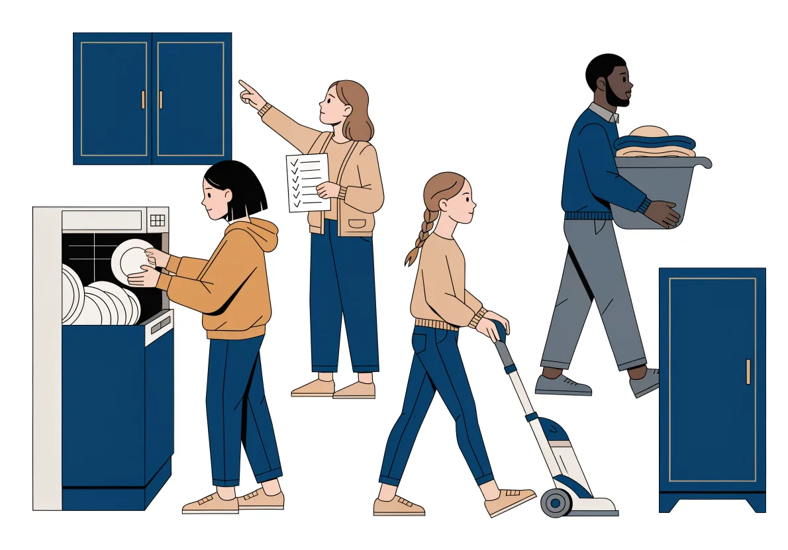
토요일 아침이에요. Wagner 가족은 토요일마다 다 같이 집을 청소해요. 누가 무엇을 할지 나누고, 물건을 어디에 둘지 말해요.
눌러서 들어 보세요.
먼저 생각해 보세요.
Als Kind musste ich helfen. musste는 언제의 일을 말하나요?
musste는 müssen의 과거예요. '~해야 했다'라는 뜻이에요.
Lektion 3의 낱말 다섯 개를 다시 떠올려 보세요.
문법 musste, durfte, konnte, wollte, Wohin? + Akkusativ, Wo? + Dativ (stellen – stehen, legen – liegen)
이 과를 마치면 집안일을 나누고, 물건을 어디에 놓을지 말하고, 어릴 때 해야 했던 일을 이야기할 수 있어요.
토요일 아침이에요. Sabine가 청소 계획표를 가져왔어요.
들으면서 찾아보세요. Yuna는 무슨 일을 맡았나요?
청소를 마치고 점심을 먹어요. 어릴 때 이야기가 나와요.
들으면서 찾아보세요. Thomas는 어릴 때 무엇을 해야 했나요?
두 대화를 듣고 답하세요.
Emma는 무슨 일을 맡았나요?
Yuna는 무슨 일을 맡았나요?
Wohin stellt Yuna die Teller?
Die Gläser stehen im Regal.
Thomas는 어릴 때 무엇을 해야 했나요?
Sabine durfte als Kind jeden Tag fernsehen.
Nur am Wochenende. 주말에만 볼 수 있었어요.
Was wollte Yuna als Kind lieber machen?
낱말 30개예요. 낱말이나 예문 앞의 단추를 누르면 소리가 나요. 명사는 der, die, das를 색으로 구분했어요.
die Hausarbeit 집안일
Alle müssen bei der Hausarbeit helfen.모두 집안일을 도와야 해요.
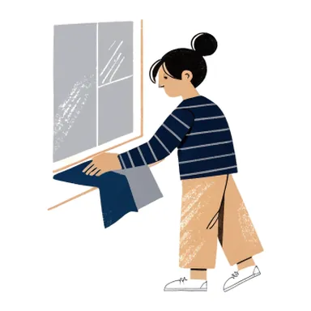
putzen, hat geputzt 청소하다, 닦다
Am Samstag putzen wir die Wohnung.토요일에 우리는 집을 청소해요.
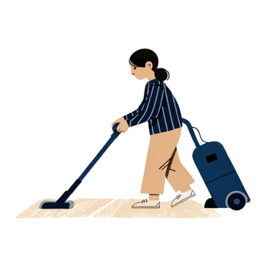
staubsaugen, hat gestaubsaugt 청소기를 돌리다
Emma muss staubsaugen.Emma는 청소기를 돌려야 해요.
waschen (du wäschst, er wäscht) 씻다, 빨다
Thomas wäscht die Wäsche.Thomas는 빨래를 해요.
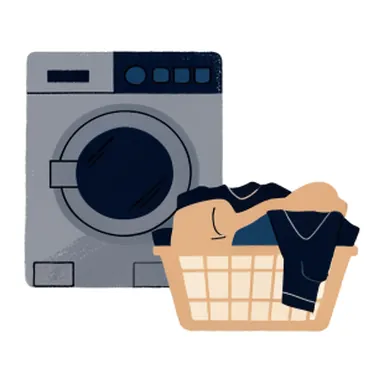
die Wäsche 빨래
Die Wäsche ist fertig.빨래가 다 됐어요.
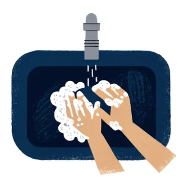
spülen, hat gespült 설거지하다
Ich spüle das Geschirr.나는 설거지를 해요.
das Geschirr 그릇, 식기
Das Geschirr steht im Schrank.그릇은 찬장에 있어요.
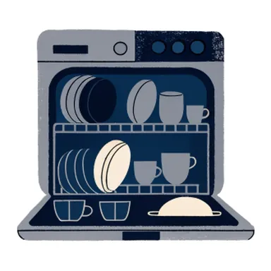
die Spülmaschine, die Spülmaschinen 식기세척기
Die Spülmaschine ist neu.식기세척기는 새것이에요.
ausräumen, hat ausgeräumt (안에 든 것을) 꺼내 정리하다
Yuna räumt die Spülmaschine aus.Yuna는 식기세척기에서 그릇을 꺼내요.
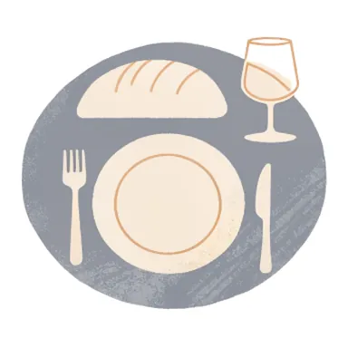
den Tisch decken 상을 차리다
Lea deckt den Tisch.Lea는 상을 차려요.
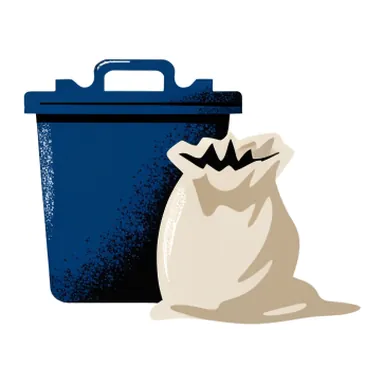
der Müll 쓰레기
Bring bitte den Müll raus.쓰레기를 내다 버려 줘.
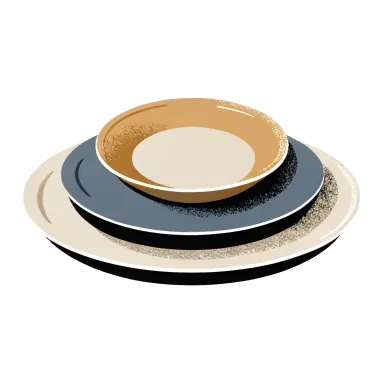
der Teller, die Teller 접시
Die Teller sind sauber.접시가 깨끗해요.
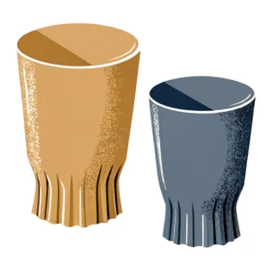
das Glas, die Gläser 유리잔
Die Gläser stehen im Regal.유리잔은 선반에 있어요.
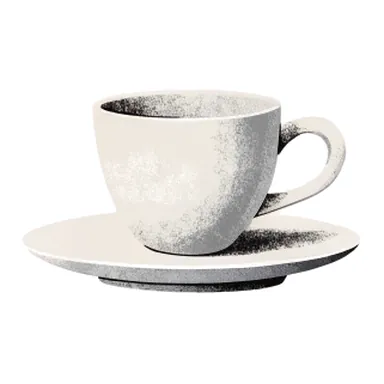
die Tasse, die Tassen 찻잔
Die Tasse ist heiß.찻잔이 뜨거워요.
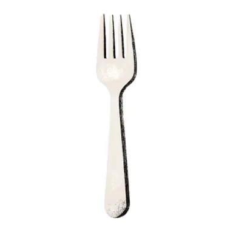
die Gabel, die Gabeln 포크
Ich brauche eine Gabel.포크가 하나 필요해요.
das Messer, die Messer 칼
Das Messer liegt auf dem Tisch.칼은 식탁 위에 있어요.
der Löffel, die Löffel 숟가락
Der Löffel ist klein.숟가락이 작아요.
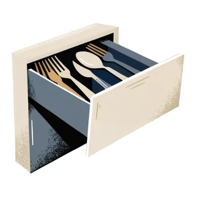
die Schublade, die Schubladen 서랍
Die Gabeln liegen in der Schublade.포크는 서랍에 있어요.
stellen, hat gestellt (세워서) 놓다
Stell die Gläser in den Schrank.유리잔을 찬장에 넣어 줘.
legen, hat gelegt (눕혀서) 놓다
Leg das Messer auf den Tisch.칼을 식탁 위에 놓아 줘.
stehen, hat gestanden 서 있다, 놓여 있다
Die Teller stehen im Schrank.접시는 찬장에 있어요.
liegen, hat gelegen 누워 있다, 놓여 있다
Mein Handy liegt auf dem Bett.내 휴대폰은 침대 위에 있어요.
früher 예전에
Früher musste ich früh ins Bett gehen.예전에 나는 일찍 자야 했어요.
als Kind 어릴 때
Als Kind durfte ich nicht lange fernsehen.어릴 때 나는 텔레비전을 오래 보면 안 됐어요.
allein 혼자
Ich durfte nicht allein fahren.나는 혼자 가면 안 됐어요.
draußen 밖에서
Die Kinder spielen draußen.아이들은 밖에서 놀아요.
üben, hat geübt 연습하다
Ich musste jeden Tag üben.나는 날마다 연습해야 했어요.
das Klavier, die Klaviere 피아노
Yuna spielt Klavier.Yuna는 피아노를 쳐요.
natürlich 물론, 당연히
Natürlich helfe ich dir.물론 도와줄게.
sauber 깨끗한
Die Küche ist sauber.부엌이 깨끗해요.
이 과의 낱말로 여덟 문제를 풀어요.
예문을 보고 답해 보세요.
müssen의 과거 musste에는 무엇이 없나요?
규칙
müssen, dürfen, können, wollen으로 지난 일을 말할 때는 Perfekt 대신 이 짧은 과거형을 써요. 줄기에 -te를 붙이고, ü와 ö의 두 점이 없어져요. ich와 er, sie, es의 모양이 같아요.
| müssen | dürfen | können | wollen | |
|---|---|---|---|---|
| ich | musste | durfte | konnte | wollte |
| du | musstest | durftest | konntest | wolltest |
| er, sie, es | musste | durfte | konnte | wollte |
| wir | mussten | durften | konnten | wollten |
| ihr | musstet | durftet | konntet | wolltet |
| sie, Sie | mussten | durften | konnten | wollten |
주의 문장 짜임은 지금과 같아요. 조동사가 둘째 자리, 다른 동사는 원형으로 맨 끝에 와요. Ich musste jeden Tag üben.
예문을 보고 답해 보세요.
in den Schrank에서 den Schrank는 몇 격인가요?
규칙
물건을 어디로(Wohin?) 옮겨 놓는지 말할 때는 in, auf, unter, neben 뒤에 4격을 써요. 세워서 놓으면 stellen, 눕혀서 놓으면 legen을 써요.
| 명사 | Wohin? + 4격 | 예문 |
|---|---|---|
| der Schrank | in den Schrank | Ich stelle die Teller in den Schrank. |
| das Regal | in das Regal (ins Regal) | Ich stelle die Gläser ins Regal. |
| die Schublade | in die Schublade | Ich lege die Gabeln in die Schublade. |
| der Tisch | auf den Tisch | Ich lege das Messer auf den Tisch. |
주의 접시, 유리잔, 병처럼 서 있는 물건은 stellen, 포크, 책, 휴대폰처럼 누워 있는 물건은 legen이에요.
예문을 보고 답해 보세요.
물건이 어디에 있는지(Wo?) 말할 때는 몇 격을 쓰나요?
규칙
물건이 어디에 있는지(Wo?) 말할 때는 같은 전치사 뒤에 3격을 써요. 서 있으면 stehen, 누워 있으면 liegen이에요. 옮기면 4격, 그대로 있으면 3격이라고 기억해요.
| 어디로? 옮긴다 (4격) | 어디에? 있다 (3격) |
|---|---|
| Ich stelle die Teller in den Schrank. | Die Teller stehen im Schrank. |
| Ich lege das Handy auf den Tisch. | Das Handy liegt auf dem Tisch. |
| Ich stelle die Tasche neben das Bett. | Die Tasche steht neben dem Bett. |
| Ich lege die Gabeln in die Schublade. | Die Gabeln liegen in der Schublade. |
주의 stellen과 legen의 과거분사는 gestellt, gelegt이고, stehen과 liegen은 gestanden, gelegen이에요. Ich habe das Glas auf den Tisch gestellt. Das Glas hat auf dem Tisch gestanden.
Lukas가 집안일 이야기를 해요. 듣고 답하세요.
Bei uns zu Hause
Lukas Bei uns zu Hause müssen alle helfen.
Lukas Ich muss den Müll rausbringen und mein Zimmer aufräumen.
Lukas Meine Schwester Lea ist acht. Sie deckt den Tisch.
Lukas Früher musste ich nicht helfen, aber jetzt bin ich vierzehn.
Lukas Am Samstag wollte ich Fußball spielen, aber ich durfte nicht. Zuerst musste ich mein Zimmer aufräumen!
Was muss Lukas machen?
Was macht Lea?
Früher musste Lukas auch helfen.
Früher musste ich nicht helfen.
Lukas는 토요일에 왜 바로 축구를 하지 못했나요?
듣고 물건이 있는 곳이나 놓을 곳을 고르세요.
유리잔을 어디에 놓아야 하나요?
Stell die Gläser bitte auf den Tisch.
접시는 어디에 있나요?
Die Teller stehen im Schrank.
휴대폰을 어디에 넣어야 하나요?
Leg das Handy bitte in die Tasche.
공책은 어디에 있나요?
Mein Heft liegt unter dem Bett.
Wagner 가족의 청소 계획표예요. 표를 보고 답하세요.
Putzplan am Samstag
| Wer? | Was? |
|---|---|
| Emma | staubsaugen, Müll rausbringen |
| Yuna | Spülmaschine ausräumen, Bad putzen |
| Thomas | Wäsche waschen, kochen |
| Sabine | Küche putzen, einkaufen |
Wer putzt das Bad?
Thomas geht einkaufen.
Sabine가 장을 봐요. Thomas는 빨래와 요리를 해요.
Emma가 맡은 일은 무엇인가요?
Sabine가 어릴 때 이야기를 썼어요. 읽고 답하세요.
Früher bei uns
Als Kind habe ich nicht in der Stadt gewohnt. Das Haus war groß und wir hatten einen Garten.
Wir waren vier Kinder und alle mussten helfen. Ich musste den Tisch decken und mein Bruder musste den Müll rausbringen.
Wir durften nur am Wochenende fernsehen. Und um acht Uhr mussten wir ins Bett gehen.
Ich wollte immer länger lesen, aber ich durfte nicht. Meine Mutter hat die Lampe ausgemacht.
Mit zehn Jahren konnte ich schon kochen. Heute kocht Thomas besser als ich!
Was musste Sabine als Kind machen?
Die Kinder durften jeden Tag fernsehen.
Wir durften nur am Wochenende fernsehen.
Wann mussten die Kinder ins Bett gehen?
Sabine는 열 살 때 무엇을 할 수 있었나요?
Heute kocht Sabine besser als Thomas.
Heute kocht Thomas besser als ich!
예전 일이에요. 알맞은 형태를 고르세요.
Als Kind ich jeden Tag den Tisch decken.
Früher wir nicht fernsehen.
Mit vier Jahren Emma schon Rad fahren.
Yuna lieber schwimmen.
du früher auch helfen?
Wir um acht ins Bett gehen.
지금 일을 예전 일로 바꿔요. 괄호 안의 동사를 알맞게 쓰세요.
Heute muss ich lernen. Gestern ich auch lernen. (müssen)
Heute darf ich fernsehen. Früher ich nicht fernsehen. (dürfen)
Heute kann ich schwimmen. Mit fünf ich nicht schwimmen. (können)
Heute will ich Musik hören. Gestern ich schlafen. (wollen)
Heute können wir kommen. Gestern wir nicht kommen. (können)
어디로 놓는지, 어디에 있는지 보고 알맞은 말을 고르세요.
Ich stelle die Teller in Schrank.
어디로? 옮기니까 4격이에요.
Die Teller stehen Schrank.
어디에? 그대로 있으니까 3격이에요. in dem은 im으로 줄여요.
Leg das Handy auf Tisch.
Das Handy liegt auf Tisch.
Stell die Tasche neben Bett.
Die Tasche steht neben Bett.
Ich lege die Gabeln in Schublade.
Die Gabeln liegen in Schublade.
stellen, stehen, legen, liegen 가운데 알맞은 것을 고르세요.
Die Gläser im Regal.
die Tasse bitte auf den Tisch!
Das Buch auf dem Bett.
Ich das Heft in die Tasche.
Wo mein Handy?
집안일과 뜻을 짝지으세요.
듣고 그대로 써 보세요.
Wohin soll ich die Teller stellen? 접시는 어디에 놓을까요?
Die Gläser stehen im Regal. 유리잔은 선반에 있어.
Als Kind musste ich das Auto waschen. 어릴 때 나는 세차를 해야 했어.
Was muss ich machen? 나는 뭘 해야 해?
Kannst du bitte den Tisch decken? 상 좀 차려 줄래?
Ich bringe den Müll raus. 내가 쓰레기를 버릴게.
Wer putzt das Bad? 욕실은 누가 청소해?
Wohin soll ich die Teller stellen? 접시는 어디에 놓을까?
Stell sie in den Schrank. 찬장에 넣어 줘.
Wo ist mein Handy? – Es liegt auf dem Tisch. 내 휴대폰 어디 있어? – 식탁 위에 있어.
Als Kind musste ich … 어릴 때 나는 ~해야 했어.
Ich durfte nicht … 나는 ~하면 안 됐어.
Mit sechs Jahren konnte ich schon … 여섯 살 때 나는 벌써 ~할 수 있었어.
Ich wollte lieber … 나는 ~하고 싶었어.
Bei uns müssen alle helfen. 우리 집에서는 모두 도와야 해.
In der Woche darf ich nicht lange fernsehen. 평일에는 텔레비전을 오래 보면 안 돼.
대화 A에서 역할을 하나 고르세요. 상대의 말은 음성으로 나오고, 내 차례에는 직접 말해요.
어릴 때 해야 했던 일, 하면 안 됐던 일, 하고 싶었던 일을 적으세요. 완성된 문장을 소리 내어 읽어 보세요.
Als Kind musste ich mein Zimmer aufräumen.
Ich durfte nicht lange fernsehen.
Ich wollte lieber draußen spielen.
Bei uns zu Hause
우리 집의 집안일과 규칙을 소개하는 글을 써 보세요. 여섯 문장쯤 써요.
Bei uns zu Hause müssen alle helfen. Ich muss mein Zimmer aufräumen und den Tisch decken. Mein Vater kocht und meine Mutter wäscht die Wäsche. Wir haben eine Regel: Wenn wir essen, ist das Handy aus. Als Kind durfte ich nur am Wochenende fernsehen. Ich wollte jeden Tag fernsehen! Jetzt finde ich die Regel gut.
다 쓴 뒤에 확인해 보세요.
Ich kann über Hausarbeit sprechen.집안일을 어떻게 나누는지 말할 수 있어요.
Ich kann sagen, wohin etwas kommt und wo etwas ist.물건을 어디에 놓는지, 어디에 있는지 말할 수 있어요.
Ich kann erzählen, was ich als Kind musste und durfte.어릴 때 해야 했던 일과 해도 됐던 일을 이야기할 수 있어요.